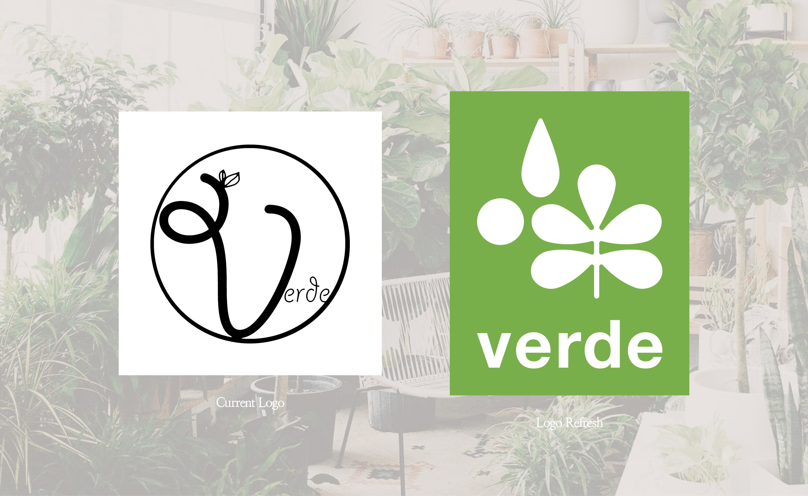
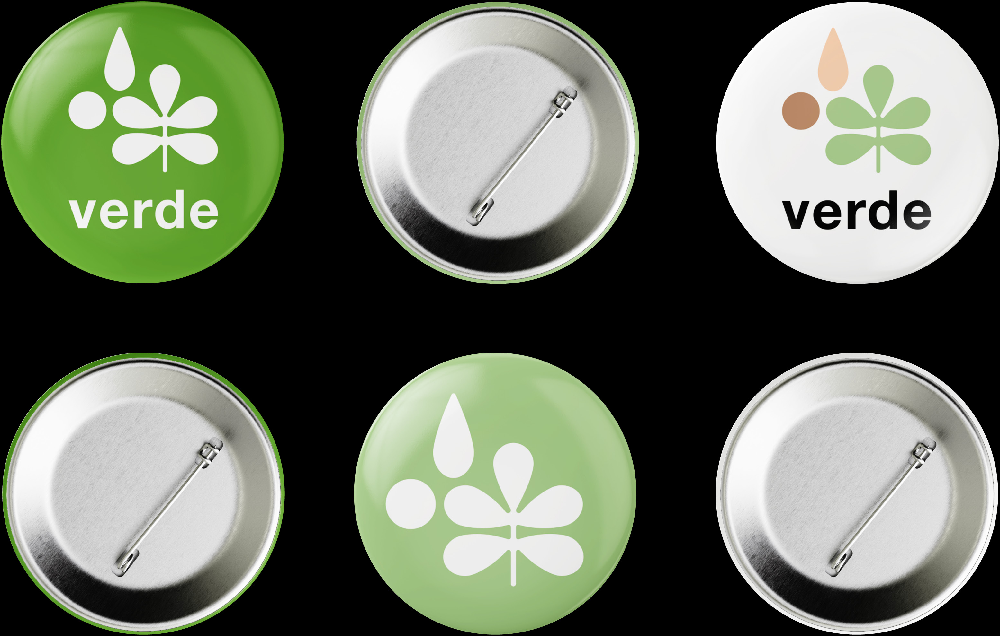
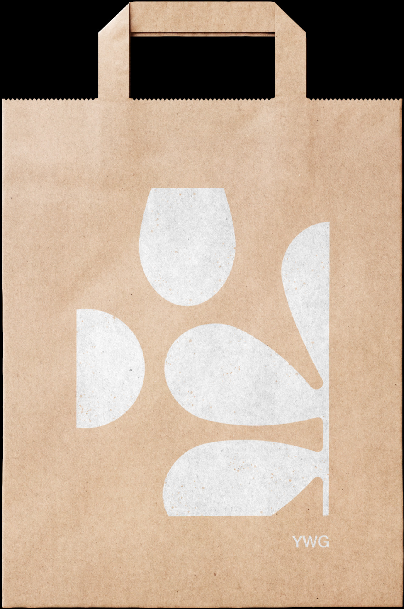
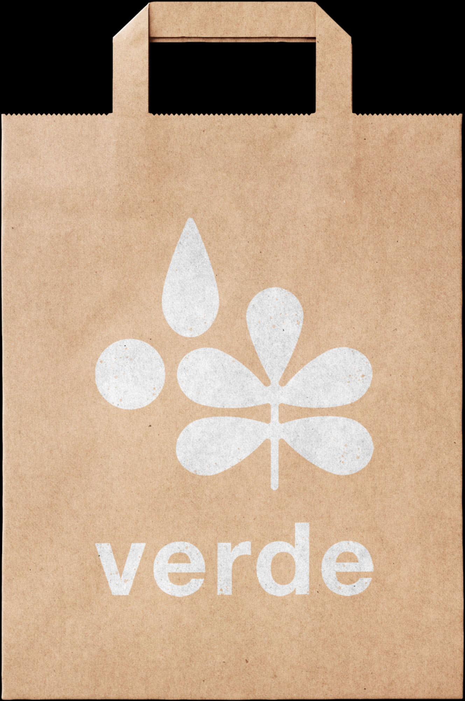
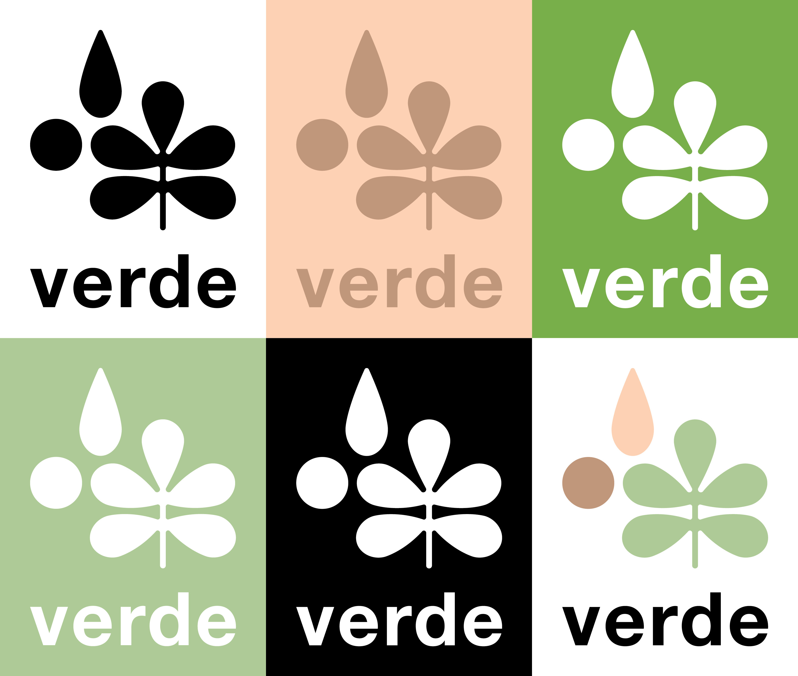
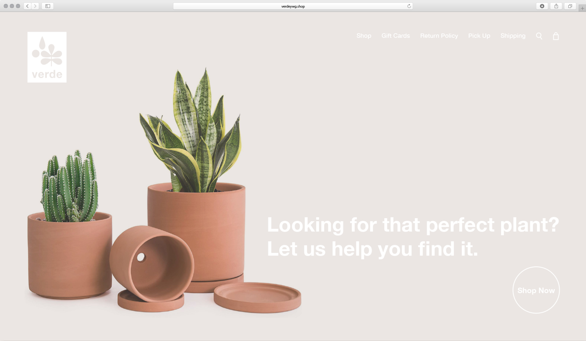
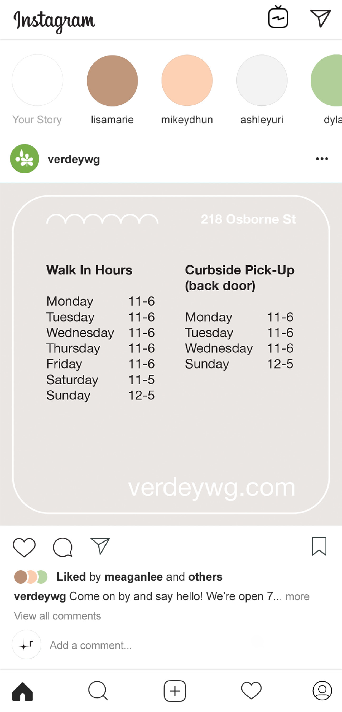
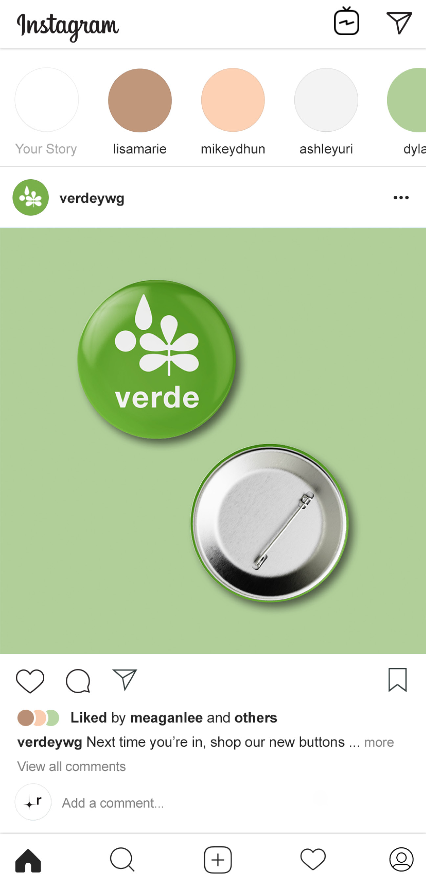
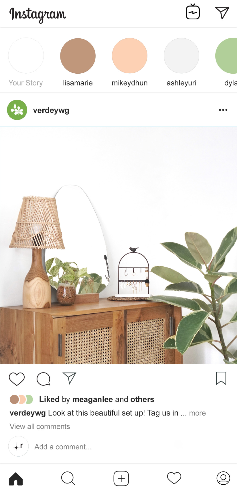
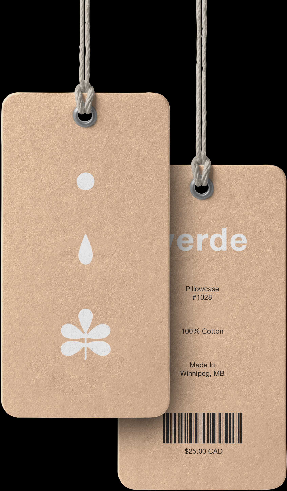

Rebrand of Verde Plant Design. The objective of this rebrand was to update the logo and graphics to better represent their identify. The primary goal was to create visuals that expressed the fun yet elegant nature of the brand and local shop. Creating versatility with the logos graphics across different mediums, such as shopping bags and product tags — was something that was essential for branding and recognition. Lively, earthy colors were chosen to portray the greenery sold at the shop but also to represent the trendy, playful nature of Verde and the products you can find there.
 







